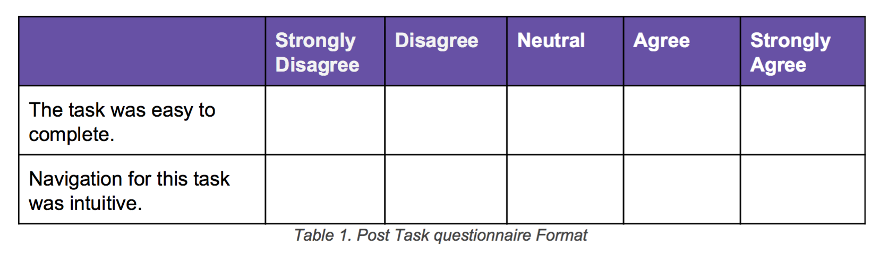

In Autumn 2016, me and another three students in University of Washington teamed up to seek to enhance the user experience of HuskyJobs through a series of usability testing.
Our research consisted of us conducting heuristic evaluation to accumulate questions we would like answered. From there we recruited potential user of this website as participants for several usability tests. Our findings show the pain points of HuskyJobs, and on the basis of these findings, we recommend that HuskyJobs implement our suggested changes in order to improve usability and user experience.
The product
HuskyJobs is an interactive system for recruiters to post information about opening positions and for students who intend to apply to jobs that are posted. We chose this project because students have voiced concerns for the site in the past and a poor HuskyJobs interface means students are missing out on internships or jobs that could have led to further opportunities in the future.
The method and participants
The following provides the scenarios given to participants and discusses the reasoning behind each task scenario.
- Starting from HuskyJobs’ landing page, login and navigate to the job search page.
- Starting from the home page, upload a resume and a cover letter to your profile.
- Starting from the home page, find the HuskyJobs’ help information on searching for jobs.
- Starting from the Home page, already logged in, find an employer-led event.
We analyzed the sites purpose and functionality in order to get a better understanding of the target users. Only current University of Washington students and alumni have access to HuskyJobs. We came to believe that a typical user uses the site sporadically. As for participant criteria, because we are focusing this usability test on several specific features on HuskyJobs, we created participant criteria that would allow us to best evaluate these areas. We decided to recruit five participants who are all current University of Washington students and have never applied to a job using HuskyJobs.
Research process
Prior to each session, we printed out the forms required to complete the usability study. For each test, the participant needed to fill out a consent form, post-task questionnaires, and a post-test questionnaire. In order to address this problem, we came up with several more focused usability questions. These questions would allow us to better understand the different components that influence the overall usability of the site.
Task 1: Login and navigate to the job search page. Before starting this task, we told participants to begin their think aloud protocol after logging into HuskyJobs. This allowed us to collect quantitative data on the time spent looking for the current student login link without think aloud protocol affecting this measure. The longest amount of time spent before finding the correct link was 3 minutes and 7 seconds, while the shortest was 4 seconds. Excluding the outlier case, the average time spent finding the current student login link was 9.75 seconds ([12, 15, 8, 4] / 4).
3 of 5 participants interacted with the large blue box of text on the My Documents page. Upon seeing the box, one participant said they found it “alarming” and “did not want to read it” while another participant simply said “Do I really want to read all of these?..” before skimming through the content. The 2 participants who did not interact with the blue box simply scrolled past it without acknowledging or reading it.
Additionally, we found that 4 out of 5 participants verbally expressed dissatisfaction or frustration regarding the task. Several of the participant’s statements are as follows: “I mean, put the help in a really clean spot, and if you want to stay this way, it needs to say this is not ALL of the help, you can get more, click this link” (P1) “Help isn’t specific to me, so why is under my name?” (P2) “Now I’m frustrated.” (P3) “Why do I have to click on my name to see the help menu?” (P4)

Users need a clear indication that their action has been successfully received by HuskyJobs. To provide this, we suggest using using pop-up windows informing the user that their document has been submitted or their RSVP for an info session was received. We also recommend keeping users on the same page that they were on while performing the task. Redirecting users to the info session search page after RSVP’ing for a specific event was a source of confusion. Providing dialogue boxes that clearly indicate confirmation of actions and maintaining user page location are two recommendations that we believe addresses HuskyJobs current issues surrounding system confirmation.

The other component contributing to finding help issues is how HuskyJobs offers different help content depending on what page the user is accessing it on. Despite 5 out of 5 users eventually finding the help link, 0 of them were able to complete the task of finding employer related information. This was because they did not realize there was additional help information other than what was displayed by a help page they accessed from the home page. The figure below shows how the help content differs from page to page.
The help pages do not visually inform the user there is additional help available. Once they had checked the content of a single help page, did not return to it because they did not expect it to change. After failing the task, one participant expressed how she was “super frustrated” and stated “you guys have to change this” after we explained how the help pages work. Page dependent help information and unintuitive findability of the help link are major issues users may have when trying to find help on HuskyJobs.

HuskyJobs is an excellent resource for both students and alumni, and by incorporating the results of this usability study, it has the potential to be an even more valuable resource. We recommend that HuskyJobs implement our suggested changes to improve the usability and user experience of the website’s design. Based on our findings and recommendations, this could be accomplished by redesigning the login page, providing clear confirmation after uploading documents and RSVP’ing to events, changing the findability and structure of the help section, removing the ambiguity from “search listings,” and connecting events to employer profiles.